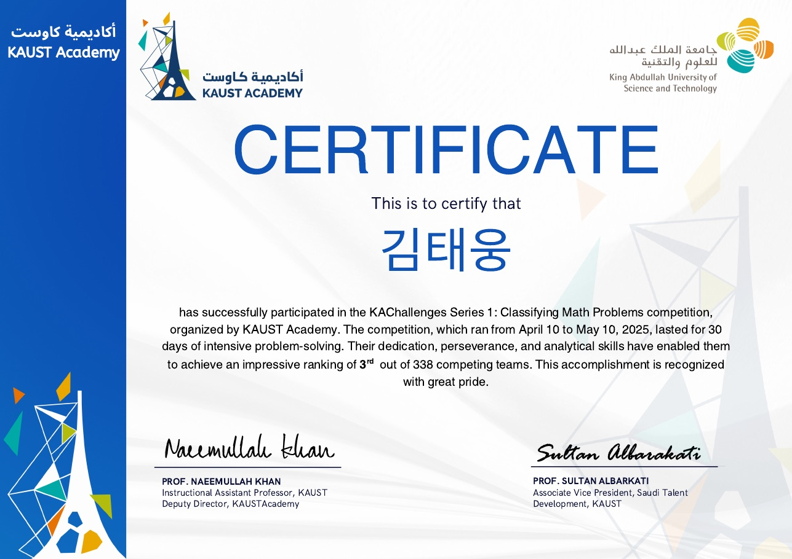
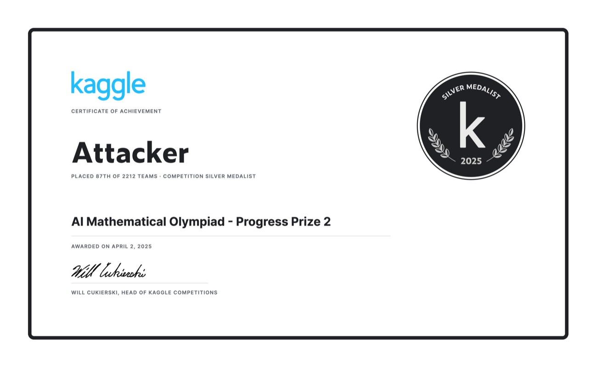

요약
- LLM 파인튜닝(SFT/LoRA/DPO/GRPO)·양자화(GPTQ/AWQ/W4A16)·vLLM 서빙까지 학습–배포 전 과정 실무.
- Kaggle 개인 참가 — 수학문제 분류 3위/338팀, AIMO Progress Prize 2 은메달(87위/2212팀).
- 의료 한국어 NLP → 정밀의료 R&D → 의료 LLM(GMR)으로 이어진 6년+ 연속 실무.
경력
Puzzle AI (퍼즐에이아이) — AI/NLP 연구원
의료 LLM(GMR) 학습·양자화·서빙을 담당해 병원용 의무기록 생성 파이프라인을 프로덕션 서빙까지 구현.
- Gemma 2/3/4·Qwen·GPT-OSS 파인튜닝 (LoRA/DPO/GRPO)
- GPTQ·AWQ·W4A16 양자화로 서빙 속도·비용 최적화
- vLLM 서빙·재현성 디버깅, 구조화 출력(xgrammar/GBNF) 문제 해결
gmr_fastapi_server백엔드 개발·운영 — 아산·충남대 의료문서(SOAP·퇴원요약·수술기록) 파이프라인- 의료 한국어 NLP → 정밀의료 R&D (유전체 변이·생존분석·증상 추출)
PythonGemma/Qwen/GPT-OSSLoRA·DPO·GRPOGPTQ·AWQ·W4A16vLLMFastAPIKubernetes·Ceph
AI 프로젝트
헬스케어 CV
두피 진단 CV에서 ScalpVision 논문 재현·초과 — macro-F1 0.744 (논문 baseline 0.689 대비 +0.055).
- 두피 진단 — 6종·4중증도 분류, EVA-02 Large + Focal loss + 강증강, 백본·손실·증강 기여도 ablation
- 얼굴 피부 부위별 진단 — DINO/CORN ordinal regression, 색소침착(볼·이마)·주름(눈가·미간), ONNX 익스포트·임베딩 인덱스
- CV 폭 — 피부병변 분류(ISIC), 이미지 분류(EfficientViT/ViT/DenseNet), 객체탐지(YOLOv8), 3D 얼굴 복원(TripoSR)·Stable Diffusion 합성
PyTorchEVA-02DINOEfficientViTCORAL/CORNYOLOv8Stable DiffusionTripoSRONNX
대화형 AI 서비스
감정분류 모델 — 테스트 정확도 97%, CPU 추론 0.06초.
- KoELECTRA 7-class 감정분류, AI-Hub 데이터셋 ~1,500개 수작업 재라벨, Optuna 1,000+ trial 튜닝
- TTS/음성 클로닝 등 외부 API 연동, 캐릭터 생성 프롬프트 엔지니어링, 베타 27명 데이터 분석
KoELECTRAOptuna
대회 · Kaggle (개인 참가)
Kaggle Competitions Expert 전 세계 상위 0.7% · 1,435 / 210,968
KAChallenges: Classifying Math Problems
3위 / 338팀- Logits Processor로 출력을 라벨 토큰으로 제약(constrained decoding) + temperature=0·max_tokens=1 — 분류를 단일 토큰 결정론 디코드로 처리해 형식 오류 제거·고속화. Qwen3-32B/Qwen2.5-32B-AWQ vLLM, 32B 도메인 파인튜닝.
AIMO Progress Prize 2
🥈 은메달 · 87위 / 2212팀- DeepSeek-R1-Distill-Qwen-7B 파인튜닝 후 AWQ 양자화, vLLM 배치 추론. 문항당 다중 샘플 → 다수결 자기일관성. max_tokens 예산 관리로 제한시간 내 샘플 수 극대화.


보유 기술
언어Python
LLM·생성형파인튜닝(SFT/LoRA/QLoRA/DPO/GRPO), 양자화(GPTQ/AWQ/W4A16/NVFP4/mxfp4/FP8), vLLM 서빙, structured output(xgrammar/GBNF), Unsloth/Axolotl, RAG·retrieval(FAISS·sentence-transformers)·임베딩 파인튜닝(BGE/Stella)·reranking
NLP·CV한국어 의료 NLP(텍스트 정규화·분류·교정) · PyTorch, EVA-02·DINO·ViT·DenseNet·EfficientViT, ordinal regression(CORAL/CORN), YOLOv8 detection, Stable Diffusion·TripoSR(3D), ONNX
백엔드·인프라FastAPI, MySQL/SQLAlchemy/Alembic, Celery, Docker, Traefik, Kubernetes/Ceph(rook)/ArgoCD, W&B, AWS·Azure OpenAI
개발 방식AI 코딩 에이전트(Claude Code·Codex) 활용 — 스펙·아키텍처·리뷰·검증 직접, 구현 병렬화. (Puzzle 초·중기 코드·Kaggle 솔루션은 직접 손코딩)
커뮤니티 · 리더십
learnup 스터디 모임장 · 소모임 앱
- 50명+ 멤버를 1년 이상 유지·운영, 매일 퇴근 후 카페 오프라인 모임 (일정·장소·진행 주도)
연락처
Kagglealeaiest
HuggingFaceqwertist